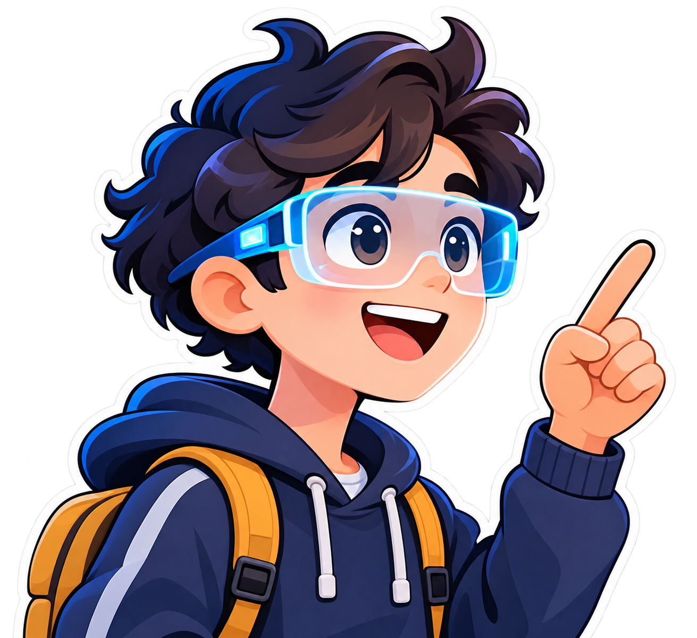

Puedes elegir los componentes desde Mi escena y usar sus opciones sin arrastrar.

Ahora controlas: un componente
Arrastra para girar. Pellizca o usa la rueda para acercar y alejar. Desactiva Conjunto para editar un componente.
Coloca tus modelos sobre una mesa o el suelo. Mueve el dispositivo despacio hasta encontrar una superficie horizontal y confirma la posición.
El conjunto comienza con unos 50 cm en su dimensión mayor. Puedes ajustar su tamaño y girarlo. Es una representación ampliada, sin escala física del sensor.
Comprueba la compatibilidad antes de entrar.
Requiere HTTPS y un dispositivo con WebXR AR y detección de superficies. La posición dura esta sesión; el archivo de escena conserva el trabajo del laboratorio, sin mapas del entorno.
Busca una superficie horizontal.
Un pequeño laboratorio, infinitas ideas. Toca un objeto y descubre todo lo que puedes hacer con él.
Elige una parte aquí o busca su número en la escena. Gira el componente para descubrir las que quedan detrás.
¿Qué crees que ocurrirá con la resistencia de la LDR al acercar la luz? Pruébalo y compara.
Simulación didáctica · valores relativos, sin unidades. No mide luz real ni representa un circuito concreto.
Guarda la escena para conservar tus notas y tu explicación.
Predice: si el obstáculo se aleja, ¿el eco tarda más o menos en regresar?
Simulación ideal, sin lecturas del entorno. Los centímetros son valores de la actividad; el dibujo tiene escala ilustrativa.
El sonido recorre la distancia dos veces: tiempo = 2 × distancia / velocidad. Aquí elegimos 343 m/s. El esquema omite temperatura, forma y absorción del obstáculo.
Guarda la escena para conservar tus resultados y tu explicación.
Elige un modelo de la colección para añadirlo a tu escena y explorarlo.
El archivo se abre en tu navegador, sin subirlo al servidor. Guarda o exporta la escena desde Mi escena para conservarlo antes de recargar.
Cargando modelos disponibles…
Tu colección de ideas en este espacio. Elige un objeto para seguir creando.
Elige una misión desde Mi escena.
Se registra la escritura; tu docente revisará la explicación.
¡Recorrido con evidencias! Comparte tu explicación con tu docente y guarda tu trabajo.
El archivo incluye tus explicaciones. Evita escribir datos personales.
Guarda aquí para continuar en este navegador o exporta un archivo para llevarlo a otro equipo.
Abrir sustituye la escena actual. Guarda antes si quieres conservarla. El archivo incluye los GLB locales y tus observaciones.
Se conserva la escena actual hasta terminar la carga.
1. Elige un componente. Tócalo en la escena o búscalo en Mi escena. Pulsa el icono de libro para abrir su ficha y reto.
2. Observa sus partes. Arrastra para girar el modelo. «Partes» muestra puntos para descubrir sus piezas. «Explorar en 3D» permite verlo solo.
3. Piensa y responde. Experimenta con luz en la LDR o con obstáculos en el ultrasónico y anota resultados. «Reto» propone una pregunta con pista. Guarda tu trabajo desde Mi escena.
Ajusta cada detalle. Más opciones (tres puntos) abre los ajustes precisos y los sliders de respaldo. Arrastra el fondo para girar la vista en X e Y. Conjunto permite girar todos los componentes y cambiar el zoom con la rueda o con dos dedos.
Los modelos sirven para observar las piezas: no simulan mediciones reales. La cámara necesita HTTPS o localhost. Ese botón superpone modelos al vídeo. Para detección de superficies abre los controles de vista y elige el modo AR, si tu dispositivo es compatible.
Arrastra este componente para girarlo.
Escribe un ángulo o cierra estas opciones para arrastrar los aros X, Y y Z en la escena.
También puedes ajustar el componente con valores o pulsaciones, sin arrastrar.
Recargar sustituye la escena actual, incluidos los modelos locales.